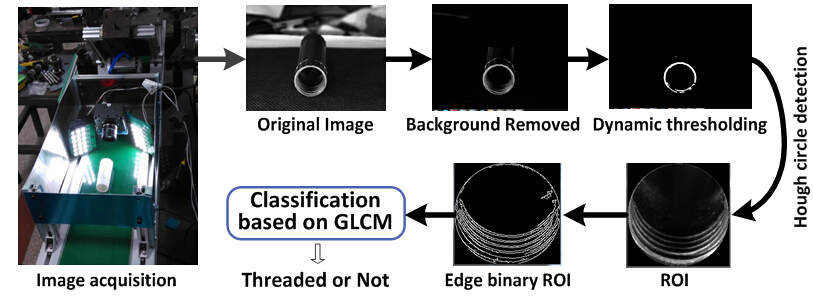

A pipe thread recognition system
Designed a pipe thread vision recognition system. Intelligent Control and System Lab @ HIT, Research advisor: Huijun Gao, Project designer: Harbin Institute of Technology
..
Flow Chart

Highlights
- The low-cost visual recognition system is implemented using an industrial PC, two LED lights panels and one normal camera.
- The recognition algorithm is designed in a series of procedures including image subtraction to remove background, Hough circle detection to locate the Region of Interest (ROI), Canny edge detection and edge filtering to achieve edge binary ROI, using gray-level concurrence matrix (GLCM) to describe the ROI texture, GLCM feature extraction and classification to achieve recognition results.
- Recognition processing speed is less than 150ms per pipe. The visual recognition system has been successfully applied to the practical assembly line with error recognition rate less than 1/2000.
- Applied for a national patent on this visual recognition system.
Video Demo
..
© 2015 Curriculum Vitae All Rights Reseverd | Design by Wanxin Jin & Doctor Yang